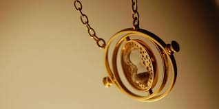

THE DURSLEYS WEREN’T THAT “EVIL”
Hold onto your butts — it's going to be a wild ride. We all know that Harry's mind became an unintentional pseudo-Horcrux when Voldemort accidentally killed himself when his Avada Kedavra curse rebounded. A small piece of Tom Riddle's soul latched onto Harry's brain and cozied up in there for the next 17 years. Even though Harry was not a "traditional" Horcrux, we know that Voldemort's presence affected Harry, giving him some of Voldemort's powers and causing occasional angry and violent outbursts. What if Harry wasn't the only one affected by Voldemort's presence?
As vividly illustrated in the books, Voldemort's true Horcruxes were capable of dramatically changing the personality of someone exposed to one for extended periods. Harry and Hermione were frequently snappish and angry while carrying the locket, and normally happy-go-lucky Ron turned into a raging, jealous mess who abandoned his friends. If a Horcrux can do that to a genial and good-natured person, what might it have done to the Dursleys, who were around Harry every day for ten years? From flashbacks, we know that Petunia wasn't exactly a very nice person as a child, and Vernon was probably no better. But it is interesting to consider that maybe their already sour natures were further exacerbated by Voldemort's evil influence. Since Dudley was born the same year as Harry, he's literally lived almost his entire life around this Horcrux. It almost makes you feel a little sorry for them ... almost.
SNAPE’S CODED MESSAGE
It took a full series for Harry Potter to figure out that Professor Snape wasn't actually out to get him and make his stay at Hogwarts miserable. If he was a star student of language like his pal Hermione, though, he might've been able to unlock the Half-Blood Prince's true intentions long before he got a screening of Snape's memories through Dumbledore's Pensieve in the final chapter. In Harry Potter and the Sorcerer's Stone, Snape challenges Harry to answer "what would [he] get if [he] added powdered asphodel to an infusion of wormwood." And it seems like a chest-inflated check to Harry's sudden star status as the big man on campus, born of hatred and disgust. But in retrospect, superfans have found a little more weight to those words.
See, asphodel is actually a member of the lily family and can invoke the phrase "my regrets follow you to your grave"; wormwood means something "bitter and grievous." This has led many to believe that Snape was really just telling Mister Potter that he was bitterly regretful of his mother, Lily, passing away. Given the fact that he loved her most of his life and clutched her corpse in agony the day he discovered The Boy Who Lived, that makes a lot of sense, then, doesn't it?

TRELAWNEY WAS NO KOOK
Hermione Granger didn't care much for Divination, but Professor Trelawney's prophecies did turn out to be astoundingly accurate, even when she seemed her kookiest. The one that most people point to as prescient in retrospect is when she declined a dinner invitation in Harry Potter and the Prisoner of Azkaban because 12 people were already seated and 13 is unlucky. (The theory then was that the first person to rise from a table of 13 would be the first to die, and, as fate would have it, Sirius Black stood first from a table of such number in Harry Potter and the Order of the Phoenix. And yes, he died first.)
But it takes an especially keen sensibility to ferret out that her birthday claim about Harry was also ultimately on point, even though it seemed way off at the time. In the same chapter, she said she thought he was born in midwinter, but he answered that his birthday was actually in July. However, Voldemort's birth date was New Year's Eve, and since Harry had a piece of Voldemort lodged in his soul after surviving the attack on his family, well, she was kinda right then, wasn't she?
Plus, of course, she totally called it when she said, "The one with the power to vanquish the Dark Lord approaches ... born to those who have thrice defied him, born as the seventh month dies ... and the Dark Lord will mark him as his equal, but he will have power the Dark Lord knows not ... and either must die at the hand of the other for neither can live while the other survives ... the one with the power to vanquish the Dark Lord will be born as the seventh month dies."
ABERFORTH’S BAR
There's a scene in Harry Potter and the Order of the Phoenix when Harry, Ron, and Hermione duck out of the temporarily authoritarian-ruled Hogwarts to formulate Dumbledore's Army at Hogsmeade. When they hit up the Hog's Head, a local bar, for some private planning, they find that there's only a bartender lurking in the dark, and he's got a goat. Only J.K. Rowling's most faithful DA members would have recognized that this was an early glimpse of Albus Dumbledore's brother, Aberforth, who was obsessed with goats and owned a bar. That very establishment would later come into play in Harry Potter and the Deathly Hallows: Part 2 when the trio tries to sneak back into Hogwarts during another troublesome Headmaster switcheroo moment–this time, with Aberforth arriving to lend a hand.
VOLDEMORT'S RUDIMENTARY BODY WAS CREATED FROM BERTHA JORKIN'S UNBORN CHILD
Voldemort's body was destroyed when his own spell bounced back on him, causing him to be reduced to a state that was worse than being a ghost. J. K. Rowling said that she told her editor how Voldemort created the rudimentary body that he had at the start of Goblet of Fire, which was so bad that it made the editor sick.
One possible way that Voldemort was able to take on his rudimentary body was by possessing Bertha Jorkin's unborn child. This dark fan theory suggests that Bertha Jorkin's was pregnant when she was captured in Albania and that Voldemort possessed her unborn child in the same manner that he did with Quirrell, only he was able to take over the entire body due to a lack of resistance. The main reason why people believe this theory is due to the fact that Voldemort's rudimentary body resembles a baby when Harry first sees it.
BARTY CROUCH JR, BILL WEASLEY, & PERCY WEASLEY USED TIME-TURNERS DURING THEIR TIME AT HOGWARTS
It was stated in Prisoner of Azkaban that it was impossible to take all twelve O.W.L. classes, due to how the timetables worked. It was only due to the fact that Hermione was an amazing student that she was able to use a Time-Turner to try and take them all. It has been stated that Barty Crouch Jr, Bill Weasley, and Percy Weasley acquired twelve O.W.L.s during their time at Hogwarts. This had led fans to believe that it was more common for exemplary students to receive Time-Turners than we were led to believe. It's likely that there is an official process for granting a Time-Turner to a student, but the teachers only ever discuss it with the rare students who can handle the workload. It makes sense that they don't want it to become common knowledge that amazing students can be given free time machines, in order to prevent any potential abuse of the power.

CROOKSHANKS WAS LILY POTTER’S CAT.
When the 3 friends are in Grimmauld Place, Harry finds a letter written by Lily, his mom. There she mentions that the Potter family owned a cat and that baby Harry almost stepped on it while he was playing with his toy broomstick. No one knows if the kitty came out alive after Voldemort’s attack, but many are sure that Crookshanks is that same cat. Here’s proof:
Hermione purchases Crookshanks in The Prisoner of Azkaban, at a place in Diagon Alley called Magical Menagerie. The store owner says that he has had the kitten for “quite some time” because no one wanted him. According to our timeline, from the attack to the day Hermione bought the cat, 12 years had passed, and that definitely qualifies as “quite some time.”
Crookshanks feels at ease with Sirius as a dog and Sirius as a human. That must be because he used to visit James and Lily before the attack and was friendly with them.
Crookshanks recognizes Scabbers and despises him immediately. Peter Pettigrew was also an old friend of James and Lily, but he was the one who betrayed them. The cat may not know what betrayal is, but he sure recognized him as being next to Voldemort the night of the attack and saw him turn into a rat after his owners lost their lives.
ARGUS FILCH'S CAT, MRS. NORRIS, IS ACTUALLY HIS WIFE
Argus Filch appears as a lonesome, grumpy, and rancorous man, but he certainly doesn’t behave like that toward his cat, Mrs. Norris. Because of the following compelling evidence, many have started to believe that the cat was not exactly his pet, but his wife, an Animagus that stayed as a cat after a transformation went wrong.
When the Basilisk petrifies her cat, Filch loses his mind. He accuses Harry of murder and starts sobbing. It’s hard to imagine that such a cold and bitter individual could react by crying over the death of a cat, even it was his pet. It made it look as if Mrs. Norris was more to him than just an animal companion.
There is no evidence that the Marauder’s Map shows animals. Otherwise, with all the student pets and magical creatures inside and outside of Hogwarts, the map should’ve been filled up with names. There’s no mention of Hedwig, for example, or Neville’s toad. However, the map doesn’t have the same treatment with Animagi, and the first time Harry opens the map, J.K. Rowling describes what it shows:
“A labeled dot in the top left corner showed that Professor Dumbledore was pacing in his study; the caretaker’s cat, Mrs. Norris, was prowling the second floor.”